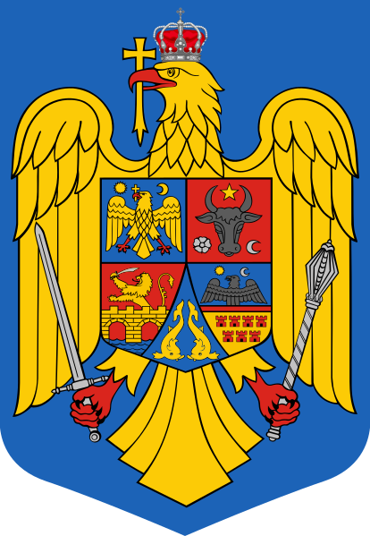

Stema României, adoptată de cele două Camere ale Parlamentului, reunite în sesiunea din 10 septembrie 1992, constă într-un vultur sau o acvilă, pe un scut, având aripile deschise; în cioc ține o cruce, pe cap Coroana de oțel a României iar în gheare o sabie și un sceptru. Între aripile protectoare se află un scut împărțit în cinci părți cuprinzând stemele celor 5 regiuni istorice:
Stema Țării Românești: acvilă cu capul conturnat, având în cioc o cruce, la dreapta un soare, la stânga o lună crai-nou. Prima versiune este atestată pe un document din 20 ianuarie 1368 emis de domnul Vladislav I.
Stema Olteniei: În 1872 pe emblema Principatelor Unite a fost introdus separat, în afara vulturului Munteniei și bourului moldovenesc și simbolul Olteniei, pe un fond roșu, un leu încoronat ieșea dintr-o coroana antică și o stea, totul din aur. Din 1921 ea a căpătat forma de azi, în cartierul al treilea, pe fond roșu, un leu ieșind dintr-un pod (podul de la Drobeta, ambele de aur).
Stema Moldovei: în varianta de pe stema României, capului de bour îi este asociată, pe lângă luna crai-nou și roza, o stea în locul soarelui atestat pe hrisovul din 30 martie 1392, dat de domnul Roman I.
Stema Transilvaniei: scut împărțit în două câmpuri: în câmpul superior era o jumătate de acvilă, cu zborul desfăcut, ieșind din linia de demarcație, iar în câmpul inferior, turnuri de cetate, ultimele amintind de numele german al Transilvaniei, Siebenbürgen ("Șapte cetăți"), nume atestat din anul 1296. Stema Transilvaniei este atestată din secolul al XVI-lea.
Banatul, Crișana și Maramureșul nu au avut steme, dar pe 23 iunie 1921, a fost stabilit ca stema Olteniei să fie atribuită și Banatului iar stema Transilvaniei să fie atribuită și Crișanei și Maramureșului.
Stema Dobrogei: constă din doi delfini afrontați, pe fond de azur, dispuși cu capul în jos. Simbolul a fost introdus pe stemă în 1872, și reprezenta inițial „Ținuturile Mării”, întrucât la acea dată România nu deținea și nu revendica Dobrogea, având însă ieșire la Marea Neagră prin fâșia Cahul-Bolgrad-Ismail. După 1878, când România a schimbat acest teritoriu cu Dobrogea de Nord, însemnul heraldic se referă la aceasta din urmă.
La baza stemei actuale stă stema României interbelice, care a fost proiectată în anul 1921 de heraldistul clujean József Sebestyén, la cererea regelui Ferdinand I al României. Stemei actuale îi lipsește, față de stema interbelică, scutul mic, argintiu-negru din interior (simbolul heraldic al Casei de Hohenzollern). Crucea de deasupra coroanei nu era o cruce simplă, ci era crucea decorației "Trecerea Dunării".
Un proiect de lege, care pune Coroana de Oțel, simbolul suveranității (independenței) României, pe capul acvilei din stemă (unde nu a fost niciodată), a fost adoptat de camerele Parlamentului în prima jumătate a lui 2016. Legea a fost promulgată la 11 iulie 2016 de către președintele Klaus Iohannis. Deși proiectul a fost bine primit de public, ca un prim pas spre îndelung-așteptata recuperare a simbolurilor heraldice românești normale, care au semnificație istorică, el a primit și critici pentru că nu reașează Coroana de Oțel în locul ei firesc, deasupra scutului albastru: în Stema Regală, Coroana de Oțel timbra scutul mare, având o dimensiune generoasă, iar acvila romană purta pe cap o coroană de aur mică (numită „coroană regală de aur” în Legea din 1921), de forma celei din decorația "Trecerea Dunării".
În stema republicană actuală, reprezentarea grafică a sceptrului ținut în gheare de acvila romană nu este cea tradițională, cu capătul în forma florii de crin (fleur-de-lys - un simbol regal provenind din tradiția franceză, care se regăsește în majoritatea stemelor lumii, inclusiv în stema interbelică a Regatului României), ci încă amintește de cea a „sceptrului prezidențial” primit în dar de președintele Nicolae Ceaușescu din partea Marii Adunări Naționale, în perioada comunistă (1974).
Până la data de 31 decembrie 2018, autoritățile publice au avut obligația să înlocuiască stemele și sigiliile existente în prezent cu noul model al acestora. De la 1 ianuarie 2019 nu mai este permisă folosirea stemei României fără acvila încoronată.
|  | |
| Data adoptării | 2015 |
| Variante anterioare |
1922-1947 - stema Regatului României |